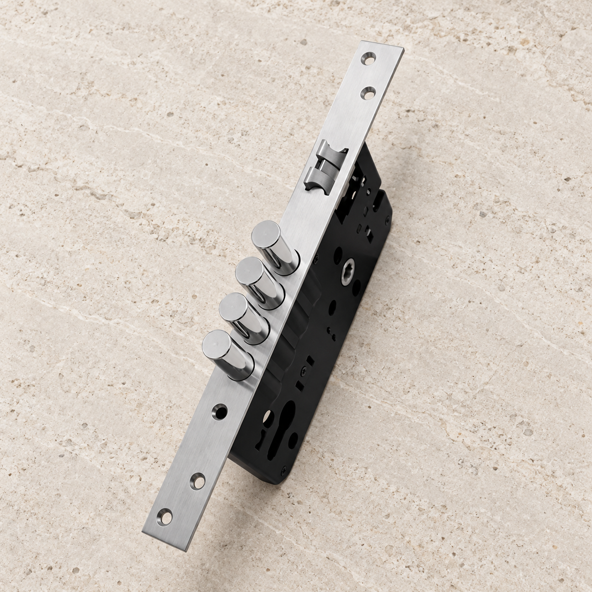
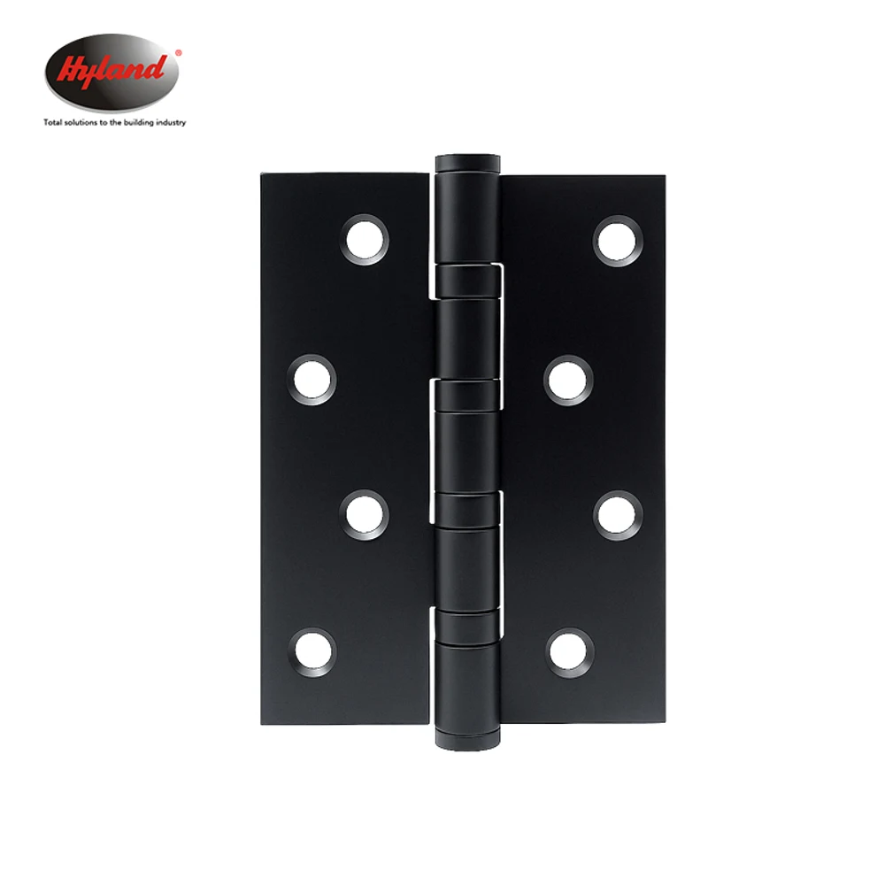
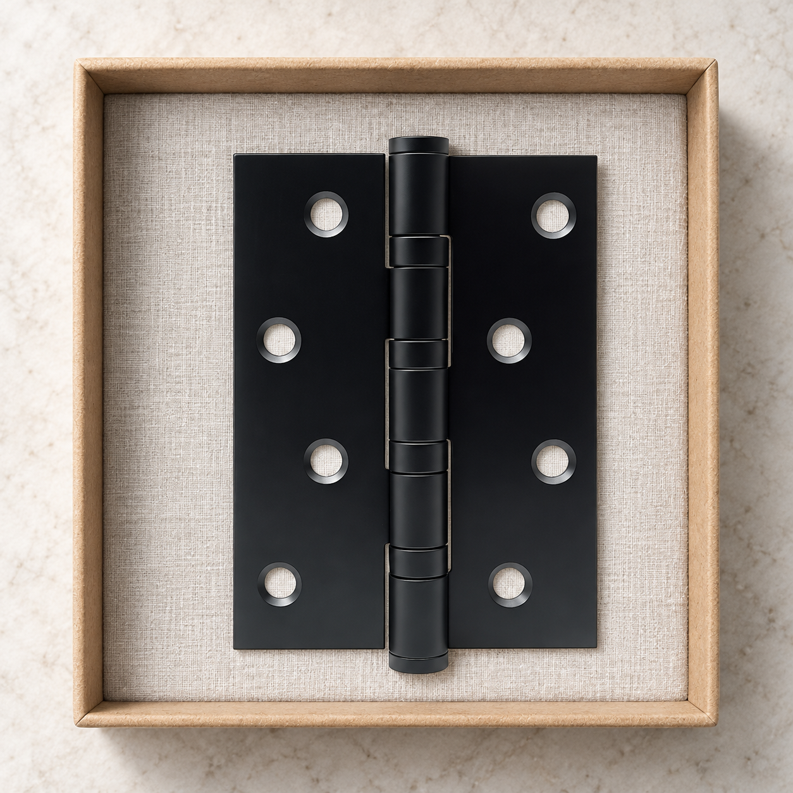
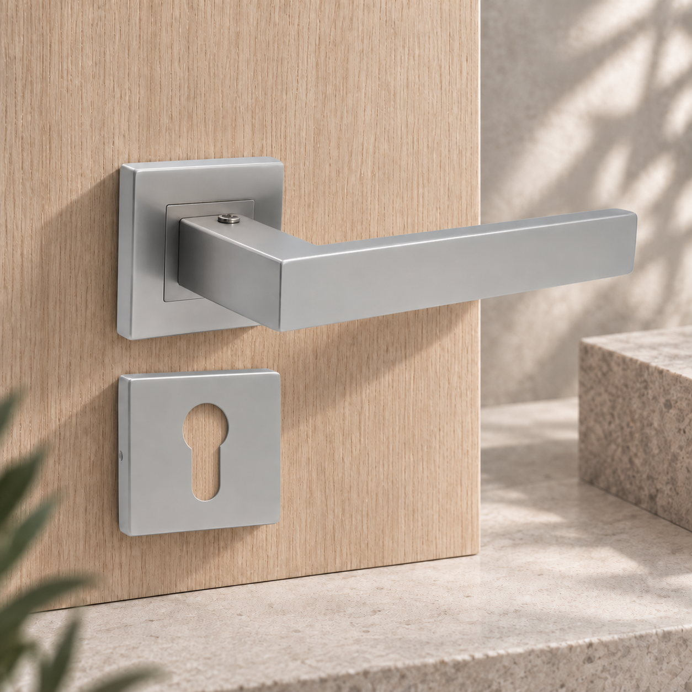

111 接手成果：三种场景，逐张对照原图
2026-09-09。产品图片以 Product Finder 为准。以下是实物照片的场景编辑候选，未上官网；不是尺寸验证图、制造 CAD 或套装证明。
旧的多产品场景保留为不合格迭代记录。新图用单一型号简化陈列，仍须保留与原图的并排对照，不能标作未经编辑的实拍。
LC04 · 石材桌面
四圆柱锁舌、上二下三固定孔、面板全长已目视对照。细小冲压轮廓与反光并非逐像素锁定，保留为候选。 官网全部角度与规格
 官网原图 · 未加工快照
官网原图 · 未加工快照
新场景候选 · 尚未替换官网BL028 · 浅色样品盒
八孔交错关系及轴节布局已目视对照。采用单款产品避免虚构混装套装。孔径与边缘倒角不能从生成图证明。 官网全部角度与规格

官网原图 · 未加工快照
新场景候选 · 尚未替换官网9004S · 木纹样品板
保留原图直柄、内嵌方底座和上方紧定螺钉；已修正钥匙孔中的白底残留。样品陈列不证明门锁安装配套关系。 官网全部角度与规格
 官网原图 · 未加工快照
官网原图 · 未加工快照
新场景候选 · 尚未替换官网官网全角度快照
LC04 85*60 · 6 张源图
BL028 · 7 张源图
9004S · 6 张源图
模型进度
9004S 外壳已重新通过 Blender 尺寸及闭合网格校验。LC04 与 BL028 的完整精细模型仍未完成：照片明确外观，不提供全部孔中心、轴节和内部尺寸。客户已确认没有额外 CAD，不再把重复索要文件作为下一步。
9004S 正交尺寸图 · Blender 外壳文件 · 全部源图与遗留成果校验清单